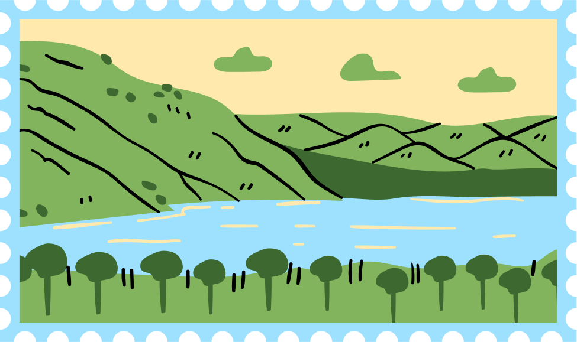

×

Sumatra Island
Sumatra is home to Lake Toba, the largest volcanic lake in the world! It was formed by a supervolcanic eruption around 74,000 years ago, one of the most powerful eruptions in Earth’s history